01
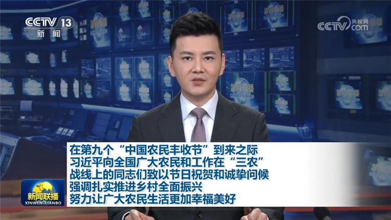
在第九个“中国农民丰收节”到来之际 习近平向全国广大农民和工作在“三农”战线上的同志们致以节日祝贺和诚挚问候 强调扎实推进乡村全面振兴 努力让广大农民生活更加幸福美好
在第九个“中国农民丰收节”到来之际，中共中央总书记、国家主席、中央军委主席习近平代表党中央，向全国广大农民和工作在“三农”战线上的同志们致以节日祝贺和诚挚问候。


在第九个“中国农民丰收节”到来之际，中共中央总书记、国家主席、中央军委主席习近平代表党中央，向全国广大农民和工作在“三农”战线上的同志们致以节日祝贺和诚挚问候。
本台今天（9月22日）播发央视快评《努力让广大农民生活更加幸福美好》。
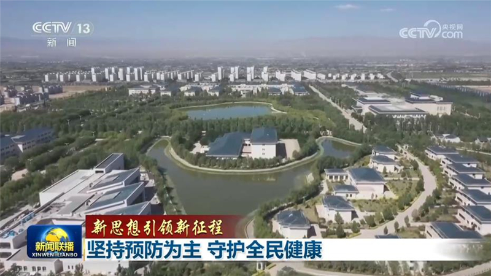
人民健康是民族昌盛和国家富强的重要标志。习近平总书记强调，预防是最经济最有效的健康策略。党的十八大以来，党中央明确新时代党的卫生与健康工作方针，推动卫生健康工作从“以治病为中心”转向“以人民健康为中心”。从慢病与癌症早筛早治到免疫规划持续扩容，从基层健康服务下沉到青少年健康综合守护，普惠均等、覆盖全生命周期的公共卫生防护网正不断织密筑牢。
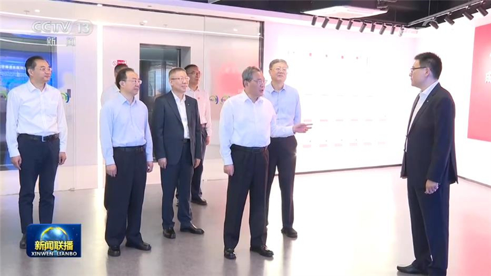
中共中央政治局常委、国务院总理李强9月22日在上海调研。他强调，要深入贯彻落实习近平总书记关于发展先进制造业的重要指示和全国先进制造业大会精神，坚持智能化、绿色化、融合化方向，推进科技创新和产业创新深度融合，大力发展新一代智能制造，加快培育壮大新兴产业和未来产业，持续做大做强先进制造业。
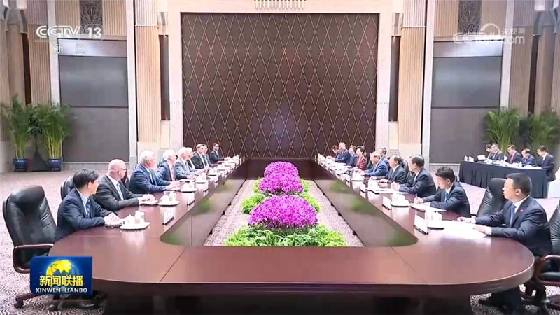
国务院总理李强22日在上海会见世界技能组织主席乌汉和首席执行官霍伊。李强表示，举办第48届世界技能大赛是习近平主席亲自关心、亲自推动的，我们有信心向世界奉献一届精彩盛会。中方愿同世界技能组织进一步深化合作，共促全球技能事业发展，推动世界经济稳健增长。中国将继续加强国内技能工作，希望世界技能组织在人才培养、师资培训等方面同中方分享更多国际经验，支持中国在技能领域全球治理中发挥更大作用。
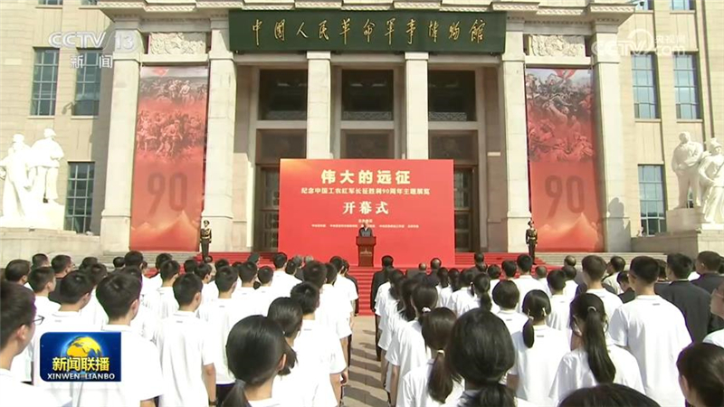
“伟大的远征——纪念中国工农红军长征胜利90周年主题展览”开幕式22日上午在中国人民革命军事博物馆举行。中共中央政治局常委、中央书记处书记蔡奇发表讲话并宣布展览开幕。
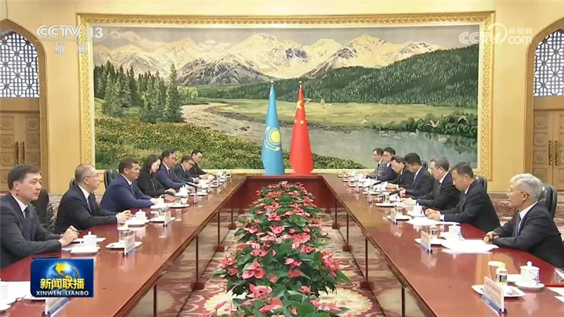
22日下午，中共中央政治局常委、国务院副总理丁薛祥在北京会见哈萨克斯坦第一副总理纳利巴耶夫。
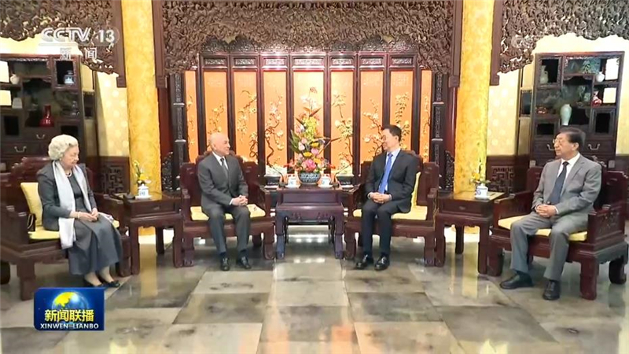
9月22日，国家副主席韩正在北京会见柬埔寨国王西哈莫尼和太后莫尼列。韩正转达了习近平主席和夫人彭丽媛的亲切问候和良好祝愿，表示中柬铁杆友谊由中国老一辈领导人和西哈努克太皇共同缔造和精心培育，历经风雨、坚如磐石。在习近平主席和西哈莫尼国王的战略指引下，两国关系迈入构建新时代全天候中柬命运共同体的新阶段。中方愿同柬方携手推动两国领导人重要共识落地见效，让中柬友好深入人心、世代相传。
国家副主席韩正将于9月24日至26日赴纽约出席第81届联合国大会一般性辩论。与会期间，韩正副主席还将出席中方举办的全球发展倡议5周年高级别对话会，会见联合国秘书长、第81届联大主席及有关国家领导人。
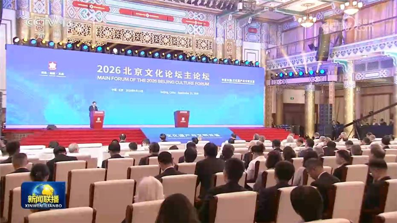
2026北京文化论坛22日在京开幕。中外嘉宾认为，文化遗产是全人类的共同财富，保护好、传承好、利用好文化遗产是人类文明赓续和世界可持续发展的要求，也是我们的共同责任。要共同秉持守护人类文化遗产的坚定信念，共同加强文化遗产保护经验交流，共同推进文化遗产保护国际合作，共同完善文化遗产保护全球治理，为保护人类文化遗产贡献更多中国方案。
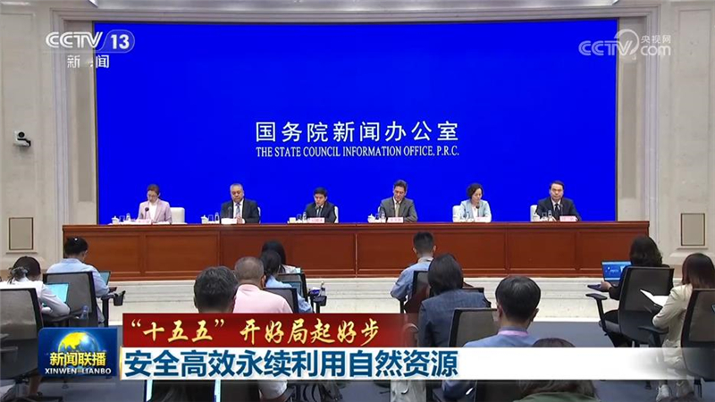
国务院新闻办公室今天（9月22日）举行“开局起步‘十五五’”系列主题新闻发布会，自然资源部、国家林草局相关负责人介绍促进自然资源安全高效永续利用有关情况。
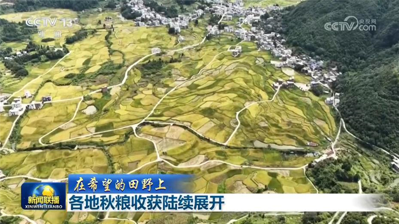
眼下，秋粮陆续进入收获季。各地抢抓农时、调度农机，确保粮食颗粒归仓。我国西南地区水稻进入收获高峰，针对西南地区多山地丘陵的地貌特点，各地采取了不同的措施。
记者从国家发展改革委今天（9月22日）举行的新闻发布会上了解到，近期，聚焦交通、物流重点领域，国家发展改革委向民营企业推介了36个项目，拟引入民间资本156亿元，这些项目现在正在有序推进。目前，民间资本参与重大项目建设的空间持续拓宽。其中，在水利领域，上半年水网建设吸引民间投资超108亿元，同比增长85.8%；在绿电直连领域目前已审批的项目中，民间资本参与的项目占到半数。……
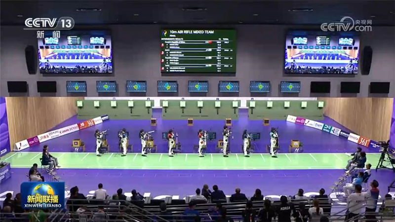
第二十届亚运会今天（9月22日）进入开幕后的第三个比赛日，在射击10米气步枪混合团体赛中，由盛李豪和王子菲组成的中国队以507.1环的绝对优势夺得冠军，并打破该项目世界纪录。在公路自行车赛场，郭莉获得女子公路赛冠军。
日前，中共中央决定：胡昌升同志任西藏自治区党委委员、常委、书记，不再担任甘肃省委书记、常委、委员职务；王君正同志不再担任西藏自治区党委书记、常委、委员职务。
两部门拨付2亿元支持4省做好抢险救灾工作
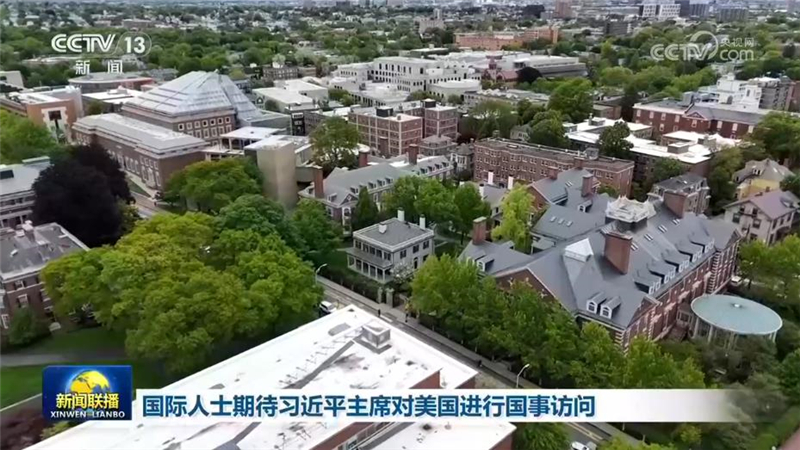
国际人士高度关注习近平主席即将对美国进行的国事访问，期待在两国元首战略引领下，两国关系健康、稳定、可持续发展，为世界带来更多和平、繁荣与进步。
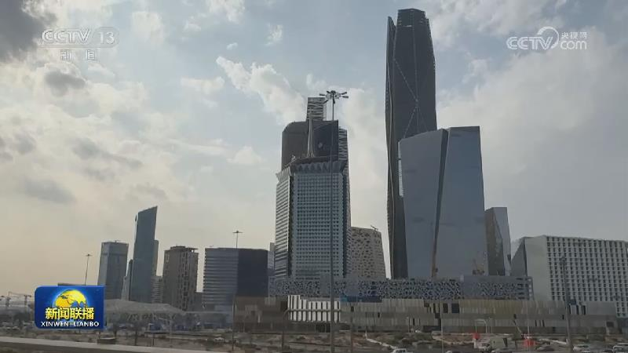
乌称多州关键基础设施遭俄军袭击